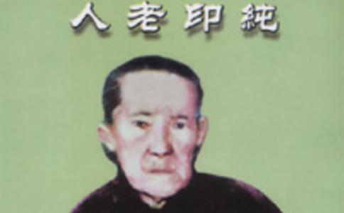

偶然在论坛上看到纯印老人的事迹后，深受感动。
清朝光绪十三年（一八八七）年，河北省临榆县（现抚宁县）紫草坞乡，有一史姓家族，一男曾为两榜进士，其人性情耿直刚正不阿，不愿为官在家务农，兼开一中药铺，济世救人，其医德医术远近闻名，人称“进士郎中”。“郎中”心地慈善，广为布施，有钱无钱均可来家就医，德被乡里受人景仰。他除了在自家坐堂诊病外，因医术高超，经常出入总督府等官宦之家，
史纯印俊美出众，长相非凡，两耳大于常人之半，双臂过膝，手指修长，肤白如玉，聪慧过人，记忆特佳。天生的胎里素，不沾荤腥，自幼性情娴淑，举止温柔，心地善良，少言寡语，喜欢布施。
纯印的弟弟六岁时，父亲请了一位私塾先生，来家教其弟弟学习《
纯印八岁时母亲病故，父亲娶了一房继母，生一傻妹妹。妹妹长到十几岁时患了骨漏（骨结核）。为了照顾这个妹妹并尽量减轻其
她不顾病床前各种难闻刺鼻的气味，长年累月为傻妹妹送水送饭，洗伤口、换药、接大小便，日日夜夜无微不至地照料她整整十一年之久，妹妹去世了，却影响了她的终身大事，二十九岁才与刘振先寻婚。当时振先上有五六十岁的父母，下有一男三女，最小的女孩不到一周岁，最大的男孩才九岁。振先常年在关外海龙给私人买卖吃劳金（营业员），每月收入相当微薄，难以养家。一直到结婚纯印与振先都没见过面，而纯印家又很富有，况因受妹妹托累而耽误了婚期，对家庭贡献不小，对婚事自己本有选择的余地，但她却心甘情愿自找苦吃。丈夫长年在关外，老少三辈七口之家全赖她养几只鸡下蛋换些油盐米，省吃节用艰苦度日，有时将娘家陪送的金银手饰拿出变卖，以维持生活。
结婚前，刘家恐她是大家闺秀不会照料孩子，公婆决定将一周岁的女孩送给婶母。婚后纯印真诚地求公婆将三女抱回，结果其当夜即将新被尿湿。此女至五、六岁时还尿床，闹人尤甚，不是让妈妈背就是让抱，从不离妈妈怀中，而纯印一点怨言都没有。
后来她生二男一女，在三个月子期间，没吃过一个鸡蛋，没喝过一碗
婚后第二个春节，前房孩子见别人家都买白米、白面、猪肉、粉条等年货，妈妈不声不响整天坐在炕上为孩子们缝补旧衣服，以为妈妈忘了过年了，大女儿多次提醒，纯印好似没听见似的，自顾闷头做活。腊月二十九，二女儿见别人家孩子都穿上了新衣，跑回家向妈妈哭要……丈夫因身体多病，好几个月没往家捎钱了，巧妇难为无米之炊，手里一分钱没有，上有老下有小年可怎么过呢？纯印并没有忘记年关来临，但她一生不会用心思动脑筋去思考，正如平时她的口头禅：车到山前必有路。一切顺自然心就无忧虑无烦恼了。
腊月二十九傍晚，她不声不响地在邻居家借一头小毛驴，抱着正在吃奶的儿子，回二十里地外娘家去了。邻居纷纷议论，说她扔下老少，回自己富有家过年去了，孩子听说后，回家围着爷爷痛哭：“妈妈不管我们了，家里没米、没油咋办哪！”爷爷非常自信地说：“你妈绝不是光顾自己、扔下我们不管的人，最晚明天准回来。”就在当天夜里，她坐着娘家的大马车回来了。带回来米、面、肉、布料等，连续劳作了两个通宵，在大年初一时让前房的四个孩子都穿上了新衣。
她对前房的儿女比对亲生的儿女还好，因为她没有脾气，也从来不会
老人虽然认字不多，记忆力特佳，二十多岁时由于陪伴小弟读私塾，故对古文
早在三十年代，纯印四十来岁，家中断炊，无米下锅，她由邻居家借一头毛驴，让其六、七岁的儿子刘进昌到其姐桂芝家借粮，十几里的路程，要翻过一座大山，山顶荒坟遍布，橡树叶随风发出瘮人的响声，更增加了凄凉恐怖之感。进昌说什么也不去，他说：“害怕！”逼的没办法，就哭鼻子。纯印无奈，附在他耳边告诉他一个
老人往生后的第二年，他去三弟刘进瑞家，看见佛堂上方贴“嗡嘛呢叭弥吽”六字咒语，就问：“这是什么咒语？”三弟告诉他这是大明咒嗡嘛呢叭弥吽。他听后惊骇地问：“这个咒语，你怎敢贴出来见人！念出声要减阳寿的。”刘进瑞哈哈一笑问：“你会这个咒语吗？”“我六岁就会，是妈教给我的，她不让告诉人，也不准念出声，说念出声减寿！”“老人家这是方便语，你受骗了七十多年，如今还蒙在鼓里！…”
纯印老人非常随和，四十年代，百姓居住条件相当差，草房，两家住对面屋，吃过早饭，大人孩子都愿到老人屋里坐坐，听她讲古人的故事（多半讲二十四孝）。一天她指着刚刚升起的太阳说：“太阳老爷天天给人讲故事，你们谁听见了？”大伙儿惊诧地望着火红的太阳沉默老半天，突然哄笑起来，“老人家又逗我们呢！”老人板起面孔一本正经地说：“我说的是真话！”“那你老说说看，太阳说啥法啦？”“它说的叫
纯印老人胸前一直佩戴一串银质饰物，从不离身，此饰物共三件。
1、银
2、法船。此物约四、五公分大小，分底仓、中层、上层，船底有莲花相托，船头、船尾各立一名艄公，用篙支撑，显得非常吃力。二层仓的一端有一圆形的钟表，船底银链系着一银铃。此法船代表法，三层代表三辈九品，往生
3、净水壶（纯印往生前，交大儿媳潘庆芬走时戴上）。此水壶比葫芦顶略大些（约二公分），做工精巧，空腹犹如沏茶的小南泥壶形状，老人曾向他人介绍此壶叫净水壶！净乃僧之意，三件饰物合起乃佛、法、僧三宝，亦称觉、正、净。三即一，一即三。虽然老人将其中表僧宝之净水壶摘下送人，亦不失三宝的圆满，因觉者心必净，正者心同样是净。另外为什么纯印老人在最后二十一天中，将代表僧的净水壶摘下让潘庆芬往生时带走呢？这与末法时期僧团有关，老人深知僧团已不纯，天魔波旬的
老人往生前非常珍重地将宝船交与三儿媳佟秀琴，让她好好保管。此物的来处已无从考究，但据其七十多岁的大儿媳潘庆芬讲，她到刘家六十来年，老人始终在胸前佩戴此物，从不离身。表心中有佛、恭敬之意。三件饰物下面都有一银铃，表警钟长鸣之意，愿众生及早醒悟速乘法船、大白牛车往生极乐。
老人一生以平等心广行布施，从不冷眼旁观别人的苦难，总是将别人的苦难播种在自己那无垠的悲田上。为父母解忧、为妹妹解苦而舍婚龄；因刘振先家老小极需照顾而离富投贫；对孤苦贫病者舍米施衣，连从娘家带来的金银手饰也舍出去让人换
老人心善手散，不把东西放在心上，伪满时期她听说庄里有人家揭不开锅，全家人抱头痛哭，就从箱内翻出娘家赔送的金戒指，求邻居大嫂送给无米下炊的人家，邻居大嫂接过戒指犹豫说：“当了死当赎不回来可咋办？”她毫不在乎地说：“一个金镏子不是啥好东西，没啥用！吃了它肠子会坠断，还是玉米面有用。我是给他家的，又不是借给他，死当就死当，你快给他们送去吧！别说是我给的，免得人家心里不安……”
纯印是大家闺秀，结婚时手上、耳朵上都戴着金银饰物，庄里同龄的姑娘媳妇、老年人羡慕得不得了，她听说后拿出许多银戒指、耳环分赠给她们，有的未得着上门求要。这下可惹了麻烦，前房生的三女儿气得回家大哭大闹：“咱家有啥，别人家准有。咱们从来没见过别人家的一针一线。没亲没故，为啥要给她们？！”老人笑哈哈地抚摸着三女儿的头说：“这些身外物，没啥可希罕的，弄不好它是遭灾惹祸的根苗，你别心疼，妈还给你留一个九连环呢！能顶好多个戒指。”边说边从箱子里取出来交给三女儿，把她哄好。
老人带宝石的金
旧社会老人丈夫刘振先和其长子进祥二人在海龙给私人买卖当店员，每年都往家捎棉线、轴线（当时关里人称洋线），远比自家纺的线光滑、耐用，老人一接到就左邻右舍各家送，所剩的自家都不够用，气得三女儿抹眼泪。
纯印老人生活非常节俭，但布施却非常大方。旧社会乞丐多，老人从不对乞讨者冷言冷语。她经常教导子女：“不要小瞧讨饭的，从古至今有多少英雄好汉要过饭，看人不要看暂时，家产万贯说穷就穷，孔
老人度量大，在关内住时，遇到买菜不够称，三女儿要找，老人阻止说：“行啦！少吃几口算什么。”有个卖柴的，起先用秤称，论斤付钱。后来卖柴说多少斤就算多少斤，三女儿说不够称，他净找咱便宜，欲指对卖柴人。老人制止说：“为人在世太计较不好，马虎点儿能积福，乡里乡亲不要因为一点小事儿伤和气，他家也很困难，砍点柴，挑这么远，很不容易，什么吃亏占便宜的？为人一生若宽宏大量不斤斤计较，那才是有福呢！吃点亏心安，占便宜亏心、亏理，碗边饭吃不饱人。好人好自己，坏人坏自己，损人不利己，贪心重的人到啥时候也发不了。你们要记住：世间人比赛谁也赛不过不动心机的人，谁也争不过什么都不争、什么都不求的人……”
伪满时，海龙县有一大户人家——张家油坊。近百口人之家，唯“活祖”（九十多岁见七辈子孙）吃斋
张家油坊每天杀一口猪，各股还不够分，逢年过节，一天要杀两三口猪，每当猪嚎叫，“活祖”就心烦，只好在佛堂闭目念佛。干儿媳纯印一去，不免提话说儿孙造杀业重，福享得太大，恐怕将来这个家难支撑。她向纯印询问：“我念佛、吃斋，你说，老佛爷能保佑我的子孙吗？”纯印微微一笑，说：“我不懂修行，我理解修行犹如和面，不能攀求，不能急躁，功到自然成，面和到一定程度，面体净而柔软，手净、盆净不沾面，面和到什么程度，只有和面的人自己有感觉，旁人怎么能体会到呢？”，她接着说：“求佛保佑，不如求自己保佑。天天杀猪天天吃肉，老爷们都养几房小妾，整日花天酒地，福都享过头了，佛想保佑也没办法呀。我嘴冷，老活祖您可不要见怪呀。”“你说的，都在理上，我怎么能怪罪你呢。有时我也想，子孙太不争气了，享受出格了，遭报应也是应该的。”！一九四六年光复前，“活祖”去世，家人为其大操大办整整七天，搭大灵棚占了半条街，八套碗席流水宴，过路人都可以吃，剩的饭菜用驴车拉着往大河里倒！扎纸人送葬的车马人物拄天拄地，全都是滚珠轴承的，用人推着走，足有一里地长。凡参加吊唁的，都给一整幅白布腰带。请的和尚、道士各显
邻居一家媳妇，常到纯印家串门，见全家九口人正在吃
老人一生心外无求，
老人二女刘桂芝回忆说：“在关里家时，父亲在关外有时一分钱也不往家捎，吃上顿无下顿，有时晚饭无米下锅，妈到左邻右舍借米，端着空瓢回来，没有借到米粮，但脸上一丝愁的样子没有。太阳还老高，把我们姐弟都喊回来，将窗户遮得严严实实，放下铺盖，让我们躺下，她给讲故事。讲的大都是二十四孝和古代圣人的故事，不知妈讲了多少遍了，因她善于引经据典，我们还是愿意听，精神一集中，肚子咕咕叫也就差了，也就忘记饥饿了，听着听着都睡着了。第二天妈再当些从娘家带来的金银手饰，换些米维持生活。”
“妈常说善人恶人心无两样，世人不觉不修才有
“我妈的心，非常好，对我们前房的儿女胜过亲生百倍，我三妹到她手里不足两岁，磨人磨得厉害，总让妈站在地上抱着，夜里好不容易抱睡着了，往炕上一放，她就大哭大闹，我妈一宿一宿地在地上抱着走，小脚抱个大孩子，累得大汗从脸上往下淌，但她从来没有一句恶言恶语。”
“我爷爷心疼妈妈的处境，背后多次向我们叨咕说，我们刘家不知哪辈子积的德，才感化你妈到咱家来，天底下再也找不出这样的好人了！她一个大户人家的小姐，一步就迈进火炕里了，孩子又多，家又穷，多操心哪。来咱家一年多，她瘦多了！
“我妈人好，心好，长得漂亮文静，说话总是慢声细语，笑眯眯的，在她的脸上看不见忧愁。天长日久，我们品着她说的话，非常灵验。我二十一岁出嫁去高家，婆家是有名的大富，因我刘家有恩于他家才结的这门亲。第三天回门时，妈乘房里无人，悄悄对我说，你一生不会生小孩，死后也不会见阎王爷。我一听心里犯忌，问妈说，我一个姑娘，怎么能不会生孩子呢？人家高家就高林一个独生苗，
刘桂芝四十岁的时候，丈夫去世了，在关外又嫁一个丈夫，本来是生育期，却仍一生没有小孩。纯印老人往生的第二年，她由抚顺来梅河，见三弟家供着老人的照片而没有父亲的照片，心生猜忌、疑惑，当即指问：“老三，妈是你的亲妈，爹就不是你亲爹吗？为什么供妈、不供爹呢？你的心太不公了。”幸亏当时有一位佛友，向她解释纯印老人是乘愿再来的人，是法身菩萨……没有几句话，迷惑七十多年的她一下醒悟了：“不要说了，我明白了！”她十分激动地回顾了“净肚佛”之事，并介绍了许多老人的事迹，都是常人做不到的事。最后她非常果断地说：“明天我就回家（原打算住几个月），这三天我没白来，回家念佛好往生净土，到那再与她老人家见面吧……”
刘桂芝还回忆说：“我妈心可宽了，一生从来不会恼怒人、记恨人、嫉妒人，没说过一句狠话。她常向子女讲‘宁吃过头饭，不说过头话’；‘鼻子底下一横填不满，封不住’；‘病从口入，祸从口出’。”
老人妯娌（犟牛的小婶，以下均以小婶代称）因公婆不愿去自已家轮饭却愿与纯印老人一起生活，隔着矮墙站在窗外骂纯印老人三天三夜，纯印老人却坐在炕上一声不吱，好像没听见似的，心平气和地绣枕头花。前房的儿女气得火上房，欲出去辩理，她将门闩上，不让出屋：“小婶再不讲理，也是长辈，以下犯上，失去人格了。再说她骂你们非要听吗？不听的孩子，没有隔夜怨，睡觉起来全忘了，还是姐姐妹妹的在一起玩。”说得子女噗嗤一笑，气全消了。老人说：“世间本来无烦恼，烦恼全是自己找，凡事不走心，就没有烦恼。你们活不干，光生气听人家骂，不是自己找烦恼吗？”三女犟嘴说：“烂嘴婶娘大声嚎气不停嘴骂了好几天，多难听！怎么能听不见呢？全庄谁不知她是烂嘴婆娘。”“个人的
老人的子女在外被人打了、骂了，回家向老人诉冤，想让她给出出气，别想！她总是哄着说：“吃点亏，让人家打几下怕啥，都是一般大！”
老人的三子刘进瑞（亲生）从小就非常
在关内时，有一天从南方来了一位拉骆驼的相面先生，在刘家门前给人看相，纯印拗不过子女纠缠，攥着三女的小手，站在院内看热闹，相面先生为了显示自己的本领，招呼纯印说：“我奉送这位大嫂一面，你身旁的女孩不是你的亲生女，你耳大面薄，面色白里透黄，没有子女之份，今世不但穷苦，最大时寿不会超过三十九岁。”
纯印在庄里人缘非常好，经相面先生这一说，大家都吃了一惊。前房的四个孩子，一听妈妈寿命快没了，围上来有的拉着手有的抱着妈妈的腿鼻涕眼泪直流地哭叫：“妈妈你不能死啊！你若死了，我们怎么办哪！”庄里人见刘家四儿女与继母的
事情刚刚平息，一天老人见小婶的小儿子爬墙头，非常危险，急忙将孩子抱下来：“来，大娘抱抱，往后可不能上墙玩，小胳膊小腿摔坏了可了不得。”小婶本来还没消气，气呼呼地接过孩子，骂她多管闲事：“孩子摔死我愿意，再生一个！你想生还没有这个德性呢（相面先生说纯印面上无子女）！你一身霉气往后不准碰我孩子！”纯印老人不但不生气，反倒哈哈一笑了之。
小婶为人刁钻刻薄，心地不善，恶口极重，是全庄出名的烂嘴婆。生多子，结果到四五岁时都夭折，无一存活，旧社会女人不生子为最大不孝，“不孝有三，无后为大”。庄里人背后讥讽她骂人骂绝户了。此话入耳，犹如钢刀扎心，昼夜不宁。为堵众人口，心生一策，按家乡规矩，无子弟兄可向同辈兄弟过房一子，一九三八年春她央人向二嫂纯印过话，欲过房纯印的三子犟牛为其养子，以免她
原来纯印听说小婶要过继小犟牛为子，二话没说，满口应承：“唉，你小婶嘴虽然不好，也够可怜的，生了四个儿子都没站下，老了跟
连个说话唠嗑的都没有，真若有个天灾病业，连个送水、接屎接尿的人都没有怎么行。前房留给我一个儿子很孝顺，我这股还有二儿子进昌，老三就过房给她吧，跟前有个儿子也能暖暖她的心，脾气也许能改一改……”
第二天领孩子时，纯印到邻居家串门去了，走前把事情交待给大儿媳潘庆芬了。小犟牛知道后找到妈妈大哭大叫，说啥也不愿去小婶家，纯印紧紧搂抱着自己的亲生子，眼睛也流出了难舍的泪水。她哄着说：“好孩子，听妈的话，你就当串几天门吧，用不了几天，你小婶就会把你送回来了……”
小婶乐颠颠地求人写了过子单，又深恐二嫂纯印变卦，很快便让人陪着急急忙忙就把哭哭涕涕的小犟牛领走了。结果没几天小犟牛就被送回来了，小婶说他嘴馋！纯印一见自己亲生儿子，一把搂到怀里，脸贴着脸，流着泪苦笑着对小婶说：“这二十来天，你们怎么能体会到一个妈妈想儿子的心哪！没有一个夜晚我不掉泪的，哪有亲娘不疼儿的，但你没儿子，外面的讽言讽语我怕挫伤了你的心，只好硬下心肠将孩子给你了。”纯印的一席话，使在场的人无不落泪，小婶内疚地低下了头… …
一九四一年小婶难产，纯印闻讯，昼夜守候在她身边，整整守了三个通宵。并乘机开导说：“你一个人顶门过日子真不容易呀，男人又不在家，虽然不缺吃穿，家里外头没个人手，今后有事就捎个口信儿，我让大秃子（纯印长子）过来帮你。你生的孩子老站不住，我琢磨是不是你平时太吝啬了，心不善怎么能有好报应呢？今后来要饭的尽量多舍给米、钱，千万不要冷言冷语伤人哪，要为孩子积德，孩子大人都太太平平的，该多好啊！”纯印的一番话，使小婶非常受感动，她不住地点头，流下惭愧的眼泪。当天夜里小婶生了一个女娃，她央求二嫂（纯印）给孩子起个名字。纯印想了想给女婴起了个名字叫“磨儿”，小婶膝下唯此女至今尚健在。
小婶为小孩站不住吓破了胆，“磨儿”百日时，她约纯印到娘娘庙许愿、求寿，求娘娘保全家平安。纯印笑笑说：“我可不信那个大泥像，那泥像是骗人的。你没听说过泥菩萨过河，自身难保吗？前几个孩子，你不也许愿磕头了吗？照样保不住。去也白费，佛在心中，心外没有佛，一个大泥像，他能保佑啥？
老人常说：“求佛不如求自心，没有善行，供佛、烧香、磕头、求保佑都没有用。求保佑心必善，没有善行，佛保佑不了。”老人经常给人们讲孝顺父母的故事如“虞舜
一九三六年纯印一家由河北省迁到关外的吉林省海龙县后，纯印携三子犟牛到当地普积庵找住持结缘。该住持妙善师，四十岁左右，端庄文静，肤白细腻，行住坐卧，威仪具足，言谈妙理横流，很有修持，唯有左手四小指细长弯曲，犹如龙须柳相似，可能是天生的宿疾。光复时海龙闹霍乱，妙善师在寺院内用大锅熬中草药，布施善信，凡服药者无一死于霍乱。
妙善师定功很深，每次入定可达五、六天之久。纯印第一次领着三子见妙善师时，并无多言，唯请师父为她谈谈因果。师父看了看纯印的面相，说她年寿最大不超过五十五岁，劝她行善积德，并作消业增寿法会。纯印听后哈哈一笑，谢过师父，领着犟牛乐颠颠地回家了。
又过了十几天，纯印第二次去普积庵，此时妙善师刚刚出定，她一见纯印，急忙从寮房迎出，并用自己珍贵的玉石茶盅为纯印倒茶（本来师父特爱洁净，从不准别人碰自己茶盅），两人相见如故，特别亲密，且从这一天开始妙善师始称纯印为师兄！
普积庵当时有三位